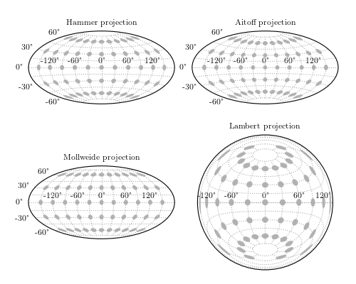
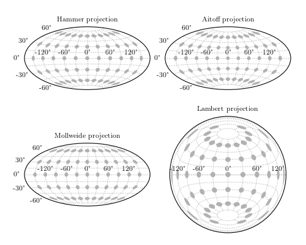

Spherical Projections¶
Example of plotting several spherical projections available in matplotlib. Note that the matplotlib basemap toolkit has some much more sophisticated tools for this sort of plot.
 

{kind=link}
# Author: Jake VanderPlas <vanderplas@astro.washington.edu>
# License: BSD
# The figure produced by this code is published in the textbook
# "Statistics, Data Mining, and Machine Learning in Astronomy" (2013)
# For more information, see http://astroML.github.com
import numpy as np
from matplotlib import pyplot as plt
from astroML.plotting import plot_tissot_ellipse
#------------------------------------------------------------
# generate a latitude/longitude grid
circ_long = np.linspace(-np.pi, np.pi, 13)[1:-1]
circ_lat = np.linspace(-np.pi / 2, np.pi / 2, 7)[1:-1]
radius = 10 * np.pi / 180.
#------------------------------------------------------------
# plot Mercator projection: we need to set this up manually
def mercator_axes():
ax = plt.axes(aspect=1.0)
ax.set_xticks(np.pi / 6 * np.linspace(-5, 5, 11))
ax.set_yticks(np.pi / 12 * np.linspace(-5, 5, 11))
for axy in (ax.xaxis, ax.yaxis):
axy.set_major_formatter(plt.FuncFormatter(lambda s, a: r'$%i^\circ$'
% np.round(s * 180 / np.pi)))
ax.set_xlim(-np.pi, np.pi)
ax.set_ylim(-np.pi / 2, np.pi / 2)
return ax
plt.figure()
ax = mercator_axes()
ax.grid(True)
plot_tissot_ellipse(circ_long[:, None], circ_lat, radius,
ax=ax, fc='k', alpha=0.3, lw=0)
ax.set_title('Mercator projection')
#------------------------------------------------------------
# Other projections can be done more automatically
plt.figure(figsize=(10, 8))
plt.subplots_adjust(hspace=0, wspace=0.1,
left=0.05, right=0.95,
bottom=0.05, top=1.0)
for (i, projection) in enumerate(['Hammer', 'Aitoff', 'Mollweide', 'Lambert']):
ax = plt.subplot(221 + i, projection=projection.lower())
ax.xaxis.set_major_locator(plt.FixedLocator(np.pi / 3
* np.linspace(-2, 2, 5)))
ax.xaxis.set_minor_locator(plt.FixedLocator(np.pi / 6
* np.linspace(-5, 5, 11)))
ax.yaxis.set_major_locator(plt.FixedLocator(np.pi / 6
* np.linspace(-2, 2, 5)))
ax.yaxis.set_minor_locator(plt.FixedLocator(np.pi / 12
* np.linspace(-5, 5, 11)))
ax.grid(True, which='minor')
plot_tissot_ellipse(circ_long[:, None], circ_lat, radius,
ax=ax, fc='k', alpha=0.3, linewidth=0)
ax.set_title('%s projection' % projection)
plt.show()